ReboundTools.RmdReboundTools is an R package that provides functions to analyze energy rebound,
the unanticipated reduction of the benefits of energy efficiency due to behavior change and economy-wide effects. Many functions perform analysis calculations to move from known parameters to rebound estimates. Other functions create rebound graphs in energy, cost, and preference spaces. The functions in this package were used for the analyses and graphs in the paper **********.
The first step in a rebound analysis is specifying parameters for the energy efficiency upgrade (EEU) and rebound analysis, typically in a Excel spreadsheet. The path to an example spreadsheet can be found with the function sample_eeu_data_path(). Data can be loaded into a data frame as follows:
eeu_data <- sample_eeu_data_path() %>%
load_eeu_data() # Uses the readxl package internally.
dplyr::glimpse(eeu_data)
#> Rows: 2
#> Columns: 27
#> $ Reference <chr> "None yet", "None yet"
#> $ Case <chr> "Car", "Lamp"
#> $ Original <chr> "Ford Fusion", "Incandescent"
#> $ Upgrade <chr> "Ford Fusion Hybrid", "LED"
#> $ service_unit <chr> "mile", "lm-hr"
#> $ energy_engr_unit <chr> "gal", "W-hr"
#> $ `MJ/energy_engr_unit` <dbl> 126.6216, 0.0036
#> $ I_E <dbl> 3.389339, 3.389339
#> $ k <dbl> 1, 1
#> $ p_E_engr_units <dbl> 2.2100000, 0.0001355
#> $ e_qs_ps_UC <dbl> -0.1, -0.4
#> $ e_qs_M <dbl> 1, 1
#> $ e_qo_M <dbl> 1, 1
#> $ eta_engr_units_orig <dbl> 25.000000, 8.833333
#> $ eta_engr_units_star <dbl> 42.0, 81.8
#> $ q_dot_s_orig <dbl> 14425, 580350
#> $ M_dot_orig <dbl> 27401.28, 27401.28
#> $ C_cap_orig <dbl> 28216.10, 1.88
#> $ t_own_orig <dbl> 7.0, 1.8
#> $ C_cap_star <dbl> 27523.40, 1.21
#> $ t_own_star <dbl> 7, 10
#> $ C_dot_md_orig <dbl> 2861.134, 0.000
#> $ C_dot_md_star <dbl> 2774.668, 0.000
#> $ E_emb_orig <dbl> 34000.0, 2.2
#> $ t_life_orig <dbl> 14.0, 1.8
#> $ E_emb_star <dbl> 40000.0, 6.5
#> $ t_life_star <dbl> 14, 10Variable names (columns in the EEU spreadsheet) are described by various constants in the package, including eeu_base_params, key_analysis_vars, and rebound_stages. Get help on any of those constants to see descriptions of parameters, variables, and stages.
Rows of the EEU spreadsheet should describe the cases to be analyzed. The example file at sample_eeu_data_path() contains two cases: a car and an electric lamp. Columns of the EEU spreadsheet should contain rebound parameters for each case. Required columns are shown in the example file and in the eeu_data data frame.
colnames(eeu_data)
#> [1] "Reference" "Case" "Original"
#> [4] "Upgrade" "service_unit" "energy_engr_unit"
#> [7] "MJ/energy_engr_unit" "I_E" "k"
#> [10] "p_E_engr_units" "e_qs_ps_UC" "e_qs_M"
#> [13] "e_qo_M" "eta_engr_units_orig" "eta_engr_units_star"
#> [16] "q_dot_s_orig" "M_dot_orig" "C_cap_orig"
#> [19] "t_own_orig" "C_cap_star" "t_own_star"
#> [22] "C_dot_md_orig" "C_dot_md_star" "E_emb_orig"
#> [25] "t_life_orig" "E_emb_star" "t_life_star"Rows can be used for sensitivity analysis, varying one or many parameters in each row of the spreadsheet.
After data are loaded, rebound analyses can be performed. A rebound analysis consists of calculating all rebound terms and intermediate results, once for each row of the EEU data frame. A convenient function to perform the rebound analysis is named, aptly, rebound_analysis(). Columns for intermediate and final results are added to the right of the data frame.
rebound_data <- rebound_analysis(eeu_data)
dplyr::glimpse(rebound_data)
#> Rows: 2
#> Columns: 153
#> $ Reference <chr> "None yet", "None yet"
#> $ Case <chr> "Car", "Lamp"
#> $ Original <chr> "Ford Fusion", "Incandescent"
#> $ Upgrade <chr> "Ford Fusion Hybrid", "LED"
#> $ service_unit <chr> "mile", "lm-hr"
#> $ energy_engr_unit <chr> "gal", "W-hr"
#> $ `MJ/energy_engr_unit` <dbl> 126.6216, 0.0036
#> $ I_E <dbl> 3.389339, 3.389339
#> $ k <dbl> 1, 1
#> $ p_E_engr_units <dbl> 2.2100000, 0.0001355
#> $ e_qs_ps_UC <dbl> -0.1, -0.4
#> $ e_qs_M <dbl> 1, 1
#> $ e_qo_M <dbl> 1, 1
#> $ eta_engr_units_orig <dbl> 25.000000, 8.833333
#> $ eta_engr_units_star <dbl> 42.0, 81.8
#> $ q_dot_s_orig <dbl> 14425, 580350
#> $ M_dot_orig <dbl> 27401.28, 27401.28
#> $ C_cap_orig <dbl> 28216.10, 1.88
#> $ t_own_orig <dbl> 7.0, 1.8
#> $ C_cap_star <dbl> 27523.40, 1.21
#> $ t_own_star <dbl> 7, 10
#> $ C_dot_md_orig <dbl> 2861.134, 0.000
#> $ C_dot_md_star <dbl> 2774.668, 0.000
#> $ E_emb_orig <dbl> 34000.0, 2.2
#> $ t_life_orig <dbl> 14.0, 1.8
#> $ E_emb_star <dbl> 40000.0, 6.5
#> $ t_life_star <dbl> 14, 10
#> $ p_E <dbl> 0.01745357, 0.03763889
#> $ eta_orig <dbl> 0.1974386, 2453.7036944
#> $ E_dot_s_orig <dbl> 73060.68, 236.52
#> $ C_dot_cap_orig <dbl> 4030.871429, 1.044444
#> $ p_s_orig <dbl> 8.840000e-02, 1.533962e-05
#> $ C_dot_s_orig <dbl> 1275.17000, 8.90235
#> $ C_dot_o_orig <dbl> 19234.10, 27391.33
#> $ f_Cs_orig <dbl> 0.0621752932, 0.0003249005
#> $ e_qs_ps <dbl> -0.03782471, -0.39967510
#> $ e_qo_ps <dbl> 0.0025076778, 0.0001298969
#> $ sigma <dbl> 0.04033238, 0.39980500
#> $ E_dot_emb_orig <dbl> 2428.571429, 1.222222
#> $ N_dot_orig <dbl> 0, 0
#> $ eta_star <dbl> 3.316969e-01, 2.272222e+04
#> $ eta_ratio <dbl> 1.680000, 9.260377
#> $ S_dot_dev <dbl> 29572.1802, 210.9789
#> $ G_dot <dbl> 516.140238, 7.941012
#> $ p_s_star <dbl> 5.261905e-02, 1.656479e-06
#> $ q_dot_s_star <dbl> 14425, 580350
#> $ C_dot_cap_star <dbl> 3931.914, 0.121
#> $ E_dot_emb_star <dbl> 2857.143, 0.650
#> $ C_dot_s_star <dbl> 759.0297619, 0.9613377
#> $ M_dot_star <dbl> 27401.28, 27401.28
#> $ N_dot_star <dbl> 701.563517, 8.864457
#> $ C_dot_o_star <dbl> 19234.10, 27391.33
#> $ E_dot_s_star <dbl> 43488.50030, 25.54108
#> $ eta_engr_units_hat <dbl> 42.0, 81.8
#> $ eta_hat <dbl> 3.316969e-01, 2.272222e+04
#> $ p_s_hat <dbl> 5.261905e-02, 1.656479e-06
#> $ C_dot_cap_hat <dbl> 3931.914, 0.121
#> $ C_dot_md_hat <dbl> 2774.668, 0.000
#> $ E_dot_emb_hat <dbl> 2857.143, 0.650
#> $ M_dot_hat <dbl> 27401.28, 27401.28
#> $ q_dot_s_hat <dbl> 14714.74, 1412809.74
#> $ E_dot_s_hat <dbl> 44362.00012, 62.17745
#> $ C_dot_s_hat <dbl> 774.27546, 2.34029
#> $ C_dot_o_hat <dbl> 19214.16, 27386.96
#> $ N_dot_hat <dbl> 706.26254, 11.85516
#> $ M_dot_hat_prime <dbl> 19988.43, 27389.30
#> $ eta_engr_units_bar <dbl> 42.0, 81.8
#> $ eta_bar <dbl> 3.316969e-01, 2.272222e+04
#> $ p_s_bar <dbl> 5.261905e-02, 1.656479e-06
#> $ C_dot_cap_bar <dbl> 3931.914, 0.121
#> $ C_dot_md_bar <dbl> 2774.668, 0.000
#> $ E_dot_emb_bar <dbl> 2857.143, 0.650
#> $ M_dot_bar <dbl> 27401.28, 27401.28
#> $ q_dot_s_bar <dbl> 15234.66, 1413421.26
#> $ E_dot_s_bar <dbl> 45929.46762, 62.20436
#> $ C_dot_s_bar <dbl> 801.633366, 2.341303
#> $ C_dot_o_bar <dbl> 19893.06, 27398.82
#> $ N_dot_bar <dbl> 0, 0
#> $ eta_engr_units_tilde <dbl> 42.0, 81.8
#> $ eta_tilde <dbl> 3.316969e-01, 2.272222e+04
#> $ p_s_tilde <dbl> 5.261905e-02, 1.656479e-06
#> $ C_dot_cap_tilde <dbl> 3931.914, 0.121
#> $ C_dot_md_tilde <dbl> 2774.668, 0.000
#> $ E_dot_emb_tilde <dbl> 2857.143, 0.650
#> $ M_dot_tilde <dbl> 27401.28, 27401.28
#> $ q_dot_s_tilde <dbl> 15234.66, 1413421.26
#> $ E_dot_s_tilde <dbl> 45929.46762, 62.20436
#> $ C_dot_s_tilde <dbl> 801.633366, 2.341303
#> $ C_dot_o_tilde <dbl> 19893.06, 27398.82
#> $ N_dot_tilde <dbl> 0, 0
#> $ Delta_eta_engr_units_star <dbl> 17.00000, 72.96667
#> $ Delta_eta_star <dbl> 1.342583e-01, 2.026852e+04
#> $ Delta_p_s_star <dbl> -3.578095e-02, -1.368314e-05
#> $ Delta_q_dot_s_star <dbl> 0, 0
#> $ Delta_E_dot_s_star <dbl> -29572.1802, -210.9789
#> $ Delta_E_dot_emb_star <dbl> 428.5714286, -0.5722222
#> $ Delta_C_dot_s_star <dbl> -516.140238, -7.941012
#> $ Delta_C_dot_cap_star <dbl> -98.9571429, -0.9234444
#> $ Delta_C_dot_md_star <dbl> -86.46614, 0.00000
#> $ Delta_C_dot_o_star <dbl> 0, 0
#> $ Delta_N_dot_star <dbl> 701.563517, 8.864457
#> $ Delta_M_dot_star <dbl> 0, 0
#> $ Delta_eta_engr_units_hat <dbl> 0, 0
#> $ Delta_eta_hat <dbl> 0, 0
#> $ Delta_p_s_hat <dbl> 0, 0
#> $ Delta_q_dot_s_hat <dbl> 289.7372, 832459.7384
#> $ Delta_E_dot_s_hat <dbl> 873.49981, 36.63637
#> $ Delta_E_dot_emb_hat <dbl> 0, 0
#> $ Delta_C_dot_s_hat <dbl> 15.245694, 1.378952
#> $ Delta_C_dot_cap_hat <dbl> 0, 0
#> $ Delta_C_dot_md_hat <dbl> 0, 0
#> $ Delta_C_dot_o_hat <dbl> -19.944713, -4.369659
#> $ Delta_N_dot_hat <dbl> 4.699019, 2.990707
#> $ Delta_M_dot_hat <dbl> 0, 0
#> $ Delta_eta_engr_units_bar <dbl> 0, 0
#> $ Delta_eta_bar <dbl> 0, 0
#> $ Delta_p_s_bar <dbl> 0, 0
#> $ Delta_q_dot_s_bar <dbl> 519.9241, 611.5195
#> $ Delta_E_dot_s_bar <dbl> 1.567468e+03, 2.691284e-02
#> $ Delta_E_dot_emb_bar <dbl> 0, 0
#> $ Delta_C_dot_s_bar <dbl> 27.357910140, 0.001012969
#> $ Delta_C_dot_cap_bar <dbl> 0, 0
#> $ Delta_C_dot_md_bar <dbl> 0, 0
#> $ Delta_C_dot_o_bar <dbl> 678.90463, 11.85415
#> $ Delta_N_dot_bar <dbl> -706.26254, -11.85516
#> $ Delta_M_dot_bar <dbl> 0, 0
#> $ Delta_eta_engr_units_tilde <dbl> 0, 0
#> $ Delta_eta_tilde <dbl> 0, 0
#> $ Delta_p_s_tilde <dbl> 0, 0
#> $ Delta_q_dot_s_tilde <dbl> 0, 0
#> $ Delta_E_dot_s_tilde <dbl> 0, 0
#> $ Delta_E_dot_emb_tilde <dbl> 0, 0
#> $ Delta_C_dot_s_tilde <dbl> 0, 0
#> $ Delta_C_dot_cap_tilde <dbl> 0, 0
#> $ Delta_C_dot_md_tilde <dbl> 0, 0
#> $ Delta_C_dot_o_tilde <dbl> 0, 0
#> $ Delta_N_dot_tilde <dbl> 0, 0
#> $ Delta_M_dot_tilde <dbl> 0, 0
#> $ Re_dempl <dbl> 0, 0
#> $ Re_emb <dbl> 0.014492385, -0.002712225
#> $ Re_cap <dbl> -0.01134172, -0.01483497
#> $ Re_md <dbl> -0.009910093, 0.000000000
#> $ Re_empl <dbl> 0.004582292, -0.002712225
#> $ Re_isub <dbl> -0.002285912, -0.070197801
#> $ Re_dsub <dbl> 0.02953789, 0.17364943
#> $ Re_sub <dbl> 0.02725198, 0.10345163
#> $ Re_dinc <dbl> 0.0530048001, 0.0001275617
#> $ Re_iinc <dbl> 0.0778109, 0.1904348
#> $ Re_inc <dbl> 0.1308157, 0.1905624
#> $ Re_prod <dbl> 0.08094646, 0.19045111
#> $ Re_dir <dbl> 0.08254269, 0.17377699
#> $ Re_indir <dbl> 0.1610537, 0.3079759
#> $ Re_tot <dbl> 0.2435964, 0.4817529Note that rebound_analysis() is a convenience function that calls several helper functions in turn. Each helper function calculates rebound parameters after one of the rebound effects.
simple <- rebound_analysis(eeu_data)
complicated <- eeu_data %>%
calc_orig() %>% # Calculate all parameters before the emplacement effect
calc_star() %>% # Calculate all parameters after the emplacement effect
calc_hat() %>% # Calculate all parameters after the substitution effect
calc_bar() %>% # Calculate all parameters after the income effect
calc_tilde() %>% # Calculate all parameters after the productivity effect
calc_Deltas() %>% # Calculate all differences between stages
calc_rebound() # Calculate all rebound terms
all(simple == complicated)
#> [1] TRUEReboundTools contains two functions to create tables: stages_table() and rebound_results_table().
After a rebound analysis has been performed, the results can be displayed in a stages table, which has rebound parameters in rows and rebound stages in columns.
digs <- matrix(c(rep(1, 7), # eta_engr_units
rep(3, 7), # eta
rep(3, 7), # p_s
rep(0, 7), # q_dot_s
rep(0, 7), # E_dot_s
rep(0, 7), # E_dot_emb
rep(0, 7), # C_dot_s
rep(0, 7), # C_dot_cap
rep(0, 7), # C_dot_md
rep(0, 7), # C_dot_o
rep(0, 7), # N_dot
rep(0, 7)), # M_dot
nrow = 12, ncol = 7, byrow = TRUE)
load_eeu_data() %>%
dplyr::filter(.data[[ReboundTools::eeu_base_params$case]] == "Car") %>%
dplyr::mutate(
Case = NULL
) %>%
rebound_analysis() %>%
stages_table(digits = digs,
align = "lrrrrrr") %>%
print(type = "html",
include.rownames = FALSE,
booktabs = TRUE,
caption.placement = "top",
sanitize.text.function = function(x) {x},
format.args = list(big.mark = ","))| \(\circ\) (orig) | \(*\) (star) | \(\wedge\) (hat) | \(-\) (bar) | \(\sim\) (tilde) | |
|---|---|---|---|---|---|
| \(\eta\) [mile/gal] | 25.0 | 42.0 | 42.0 | 42.0 | 42.0 |
| \(\eta\) [mile/MJ] | 0.197 | 0.332 | 0.332 | 0.332 | 0.332 |
| \(p_s\) [$/mile] | 0.088 | 0.053 | 0.053 | 0.053 | 0.053 |
| \(\dot{q}_s\) [mile/year] | 14,425 | 14,425 | 14,715 | 15,235 | 15,235 |
| \(\dot{E}_s\) [MJ/year] | 73,061 | 43,489 | 44,362 | 45,929 | 45,929 |
| \(\dot{E}_{emb}\) [MJ/year] | 2,429 | 2,857 | 2,857 | 2,857 | 2,857 |
| \(\dot{C}_s\) [$/year] | 1,275 | 759 | 774 | 802 | 802 |
| \(\dot{C}_{cap}\) [$/year] | 4,031 | 3,932 | 3,932 | 3,932 | 3,932 |
| \(\dot{C}_{md}\) [$/year] | 2,861 | 2,775 | 2,775 | 2,775 | 2,775 |
| \(\dot{C}_o\) [$/year] | 19,234 | 19,234 | 19,214 | 19,893 | 19,893 |
| \(\dot{N}\) [$/year] | 0 | 702 | 706 | 0 | 0 |
| \(\dot{M}\) [$/year] | 27,401 | 27,401 | 27,401 | 27,401 | 27,401 |
Rebound analysis results can also be displayed in a rebound results table. A rebound results table shows rebound terms and values.
load_eeu_data() %>%
dplyr::filter(Case == "Car") %>%
rebound_analysis() %>%
dplyr::mutate(
Case = NULL
) %>%
ReboundTools::rebound_results_table(include_subtotals = FALSE,
label = "tab:car_results",
digits = 1,
align = "rrr") %>%
print(type = "html",
include.rownames = FALSE,
booktabs = TRUE,
caption.placement = "top",
hline.after = c(-1, 0, nrow(.)-1, nrow(.)),
sanitize.text.function = function(x) {x},
format.args = list(big.mark = ","))| Rebound term | Value [%] |
|---|---|
| \(Re_{dempl}\) | 0.0 |
| \(Re_{emb}\) | 1.4 |
| \(Re_{cap}\) | -1.1 |
| \(Re_{md}\) | -1.0 |
| \(Re_{dsub}\) | 3.0 |
| \(Re_{isub}\) | -0.2 |
| \(Re_{dinc}\) | 5.3 |
| \(Re_{iinc}\) | 7.8 |
| \(Re_{pr\!od}\) | 8.1 |
| \(Re_{tot}\) | 24.4 |
Rebound graphs can be created with the path_graphs() function. Three types of rebound graphs are available:
The graph_type argument to path_graphs() controls which type of path graph is returned (one of “Energy”, “Cost”, or “Preferences”). By default, all three graph types are returned. The cases argument determines which cases are plotted. By default, all cases are returned.
An energy path graph shows the energy effects of the energy efficiency upgrade, with direct energy consumption on the horizontal axis and indirect energy consumption on the vertical axis. Diagonal lines with negative slope indicate lines of constant energy consumption. The thicker lines show 0 % rebound (lower left) and 100 % rebound (upper right). Thinner lines show rebound after each effect in order from the 0 % line to the 100 % line: emplacement, substitution, income, and productivity. The following example illustrates an energy path graph.
load_eeu_data() %>%
rebound_analysis() %>%
path_graphs(cases = "Car", graph_types = "Energy") +
ggplot2::theme_classic()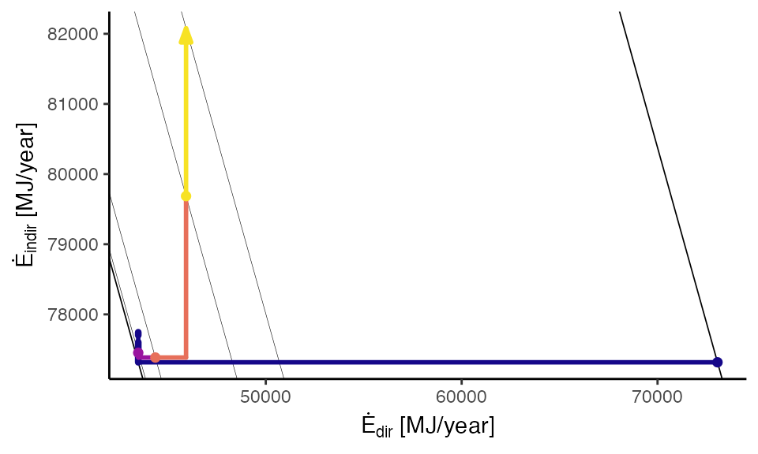
The cost path graph shows costs for rebound effects. Direct costs for the energy service (including substitution and income takebacks) are shown in the horizontal axis; capital costs, maintenance and disposal costs, substitution effect savings, and income effect costs are shown in the vertical axis. Diagonal lines with negative slope indicate lines of constant expenditure. The lower-left line indicates expected expenditure options before capital cost changes, maintenance cost changes, or behavior changes. Note that the beginning (cot) and end (arrow) of the cost path graph lie on the same expenditure line, indicating that all freed cash (after the emplacement and substitution effects) is re-spent in the income effect.
load_eeu_data() %>%
rebound_analysis() %>%
path_graphs(cases = "Car", graph_types = "Cost") +
ggplot2::theme_classic()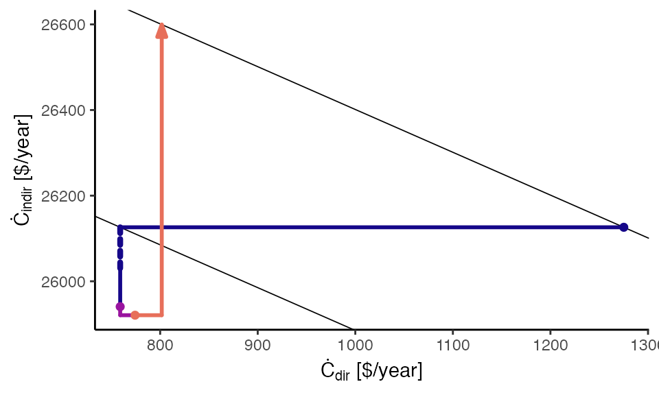
The preferences path graph shows details of the substitution and income effects, with normalized energy service consumption on the horizontal axis and normalized costs of other goods on the vertical axis. Diagonal grid lines with negative slope indicate constant expenditure sum of the energy service (horizontal axis) and other goods (vertical axis). Negative-sloping lines show the tradeoff between consumption of the energy service (horizontal axis) and consumption of other goods (vertical axis). The swooping, concave-upward grid lines indicate lines of constant utility: indifference curves.
load_eeu_data() %>%
rebound_analysis() %>%
path_graphs(cases = "Car", graph_types = "Preferences") +
ggplot2::xlim(0.995, 1.06) +
ggplot2::ylim(0.995, 1.04) +
ggplot2::theme_classic()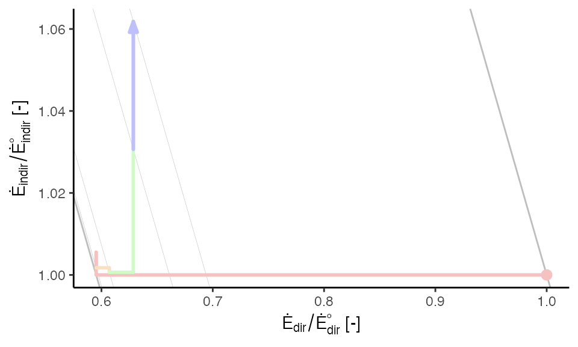
path_graphs()
In addition to the graph_types and cases arguments, the following arguments adjust the composition and appearance of graphs:
indexed,graph_types,grid_types, andgraph_params.indexed
Setting indexed = TRUE normalizes the rebound data to conditions before emplacement of the energy efficient device, such that the starting point is always (1, 1).
load_eeu_data() %>%
rebound_analysis() %>%
path_graphs(indexed = TRUE, cases = "Car", graph_types = "Energy") +
ggplot2::theme_classic()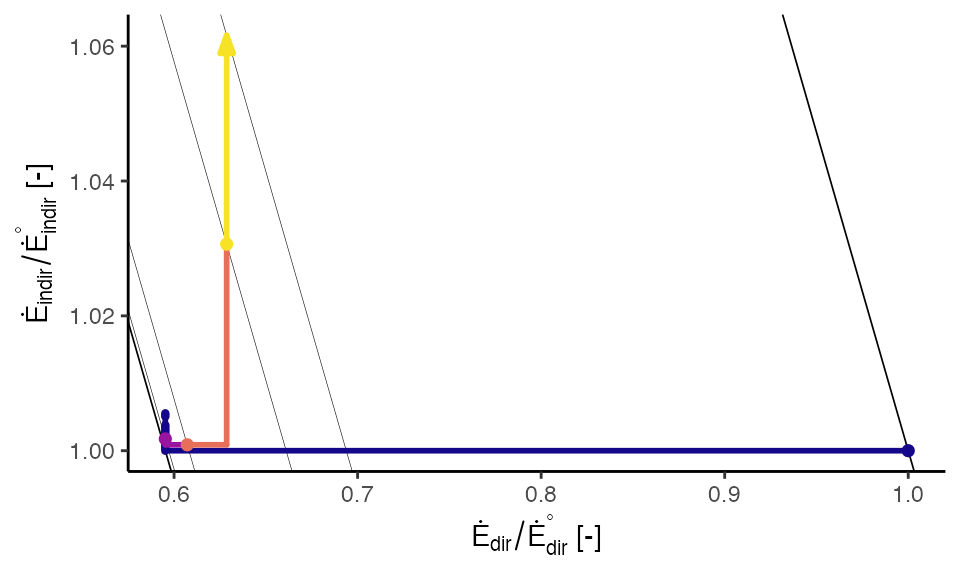
As discussed above, the cases argument tells which Cases should be plotted. All cases are plotted by default, although the result is rarely pleasing.
load_eeu_data() %>%
rebound_analysis() %>%
path_graphs(cases = c("Car", "Lamp"),
graph_types = "Energy") +
ggplot2::theme_classic()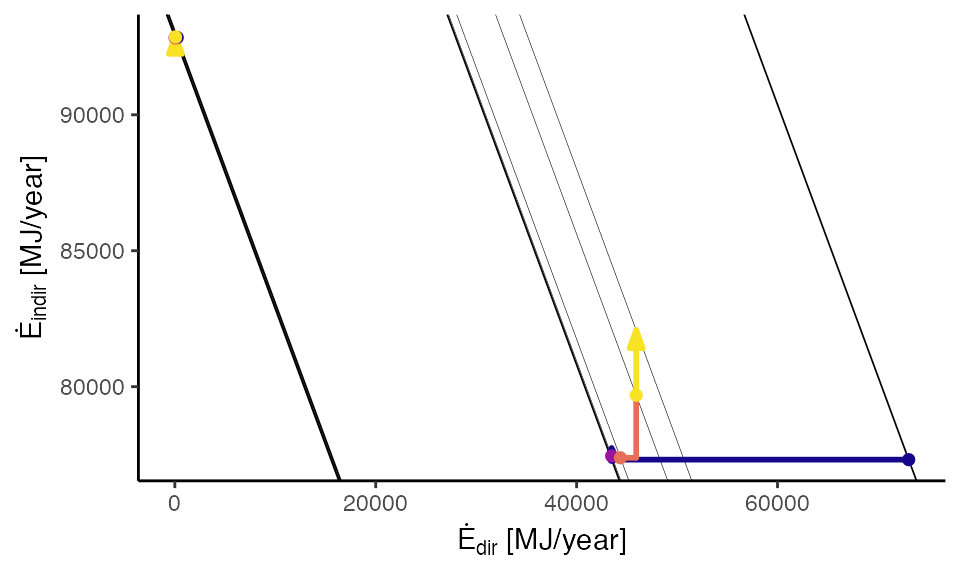
When the cases are overlapping or very different (as above), faceting and indexing may improve the appearance of the graph.
load_eeu_data() %>%
rebound_analysis() %>%
path_graphs(indexed = TRUE,
graph_types = ReboundTools::graph_types$energy) +
ggplot2::facet_wrap(facets = ReboundTools::eeu_base_params$case) +
ggplot2::theme_classic()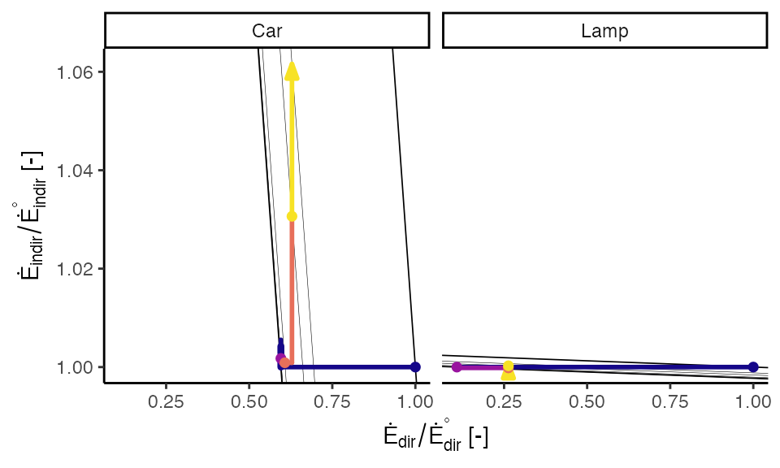
graph_types
The graph_types argument tells which type of graph should be created. The default ReboundTools::graph_types returns all three graph types. Again, faceting and indexing may be beneficial.
load_eeu_data() %>%
rebound_analysis() %>%
path_graphs(indexed = TRUE, cases = "Car") +
ggplot2::facet_wrap(facets = ReboundTools::graph_df_colnames$graph_type_col) +
ggplot2::xlim(0.5, 1.2) +
ggplot2::ylim(0.99, 1.08) +
ggplot2::theme_classic()
#> Warning: Removed 280 row(s) containing missing values (geom_path).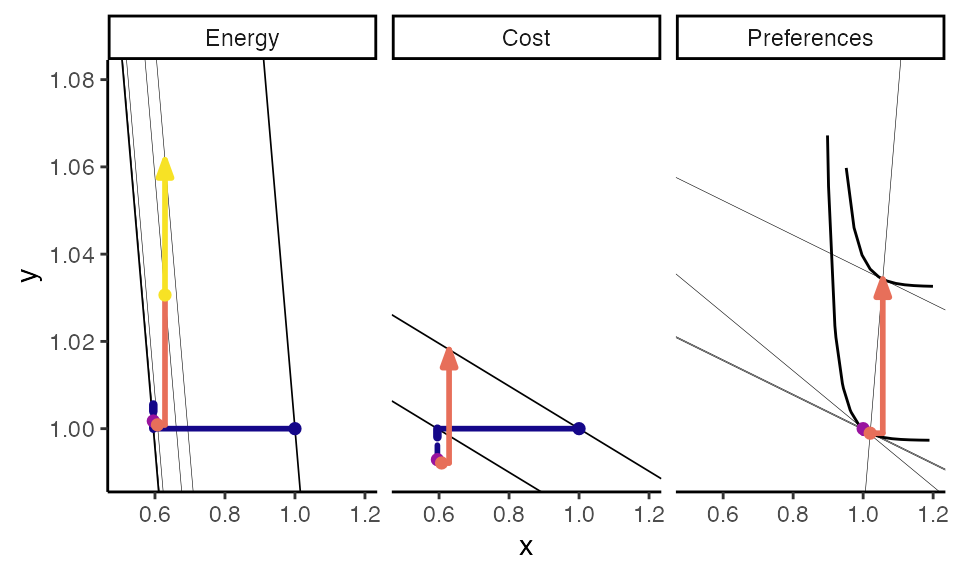
Note that the path_graphs() function applies labels to the x and y axes whenever the labels are unambiguous. However, when multiple path graphs are included in the same figure, the x and y axis labels are unclear. The user can apply labels appropriate to their situation.
load_eeu_data() %>%
rebound_analysis() %>%
path_graphs(indexed = TRUE, cases = "Car") +
ggplot2::facet_wrap(facets = ReboundTools::graph_df_colnames$graph_type_col) +
ggplot2::xlim(0.5, 1.2) +
ggplot2::ylim(0.99, 1.08) +
ggplot2::xlab("my x label") +
ggplot2::ylab("my y label") +
ggplot2::theme_classic()
#> Warning: Removed 280 row(s) containing missing values (geom_path).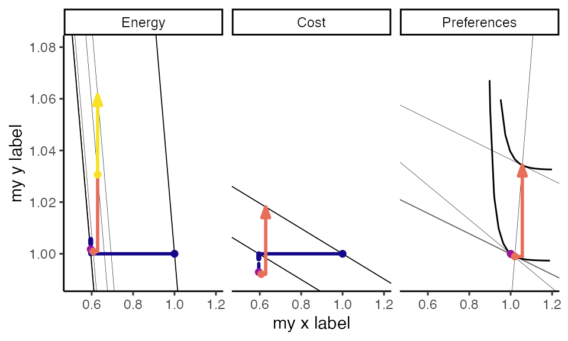
load_eeu_data() %>%
rebound_analysis() %>%
path_graphs(indexed = TRUE) +
ggplot2::facet_grid(rows = vars(Case),
cols = vars(graph_type),
scales = "free") +
ggplot2::xlim(0.5, 1.2) +
ggplot2::ylim(0.99, 1.08) +
ggplot2::theme_classic()
#> Warning: Removed 334 row(s) containing missing values (geom_path).
#> Warning: Removed 15 rows containing missing values (geom_segment).
#> Warning: Removed 3 rows containing missing values (geom_segment).
#> Warning: Removed 6 rows containing missing values (geom_point).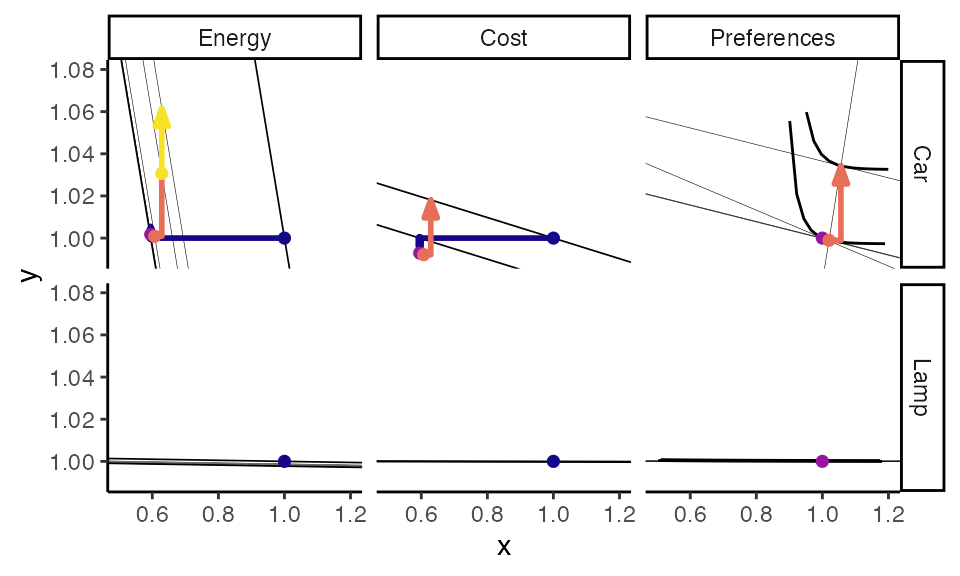
grid_types
The grid_types argument tells which grids to include on the rebound graphs. By default, grids are provided for all graph types. In the example below, grids are provided only for the energy and cost path graphs.
load_eeu_data() %>%
rebound_analysis() %>%
path_graphs(indexed = TRUE, grid_types = c("Energy", "Cost")) +
ggplot2::facet_grid(rows = vars(Case),
cols = vars(graph_type),
scales = "free") +
ggplot2::xlim(0.5, 1.2) +
ggplot2::ylim(0.99, 1.08) +
ggplot2::theme_classic()
#> Warning: Removed 15 rows containing missing values (geom_segment).
#> Warning: Removed 3 rows containing missing values (geom_segment).
#> Warning: Removed 6 rows containing missing values (geom_point).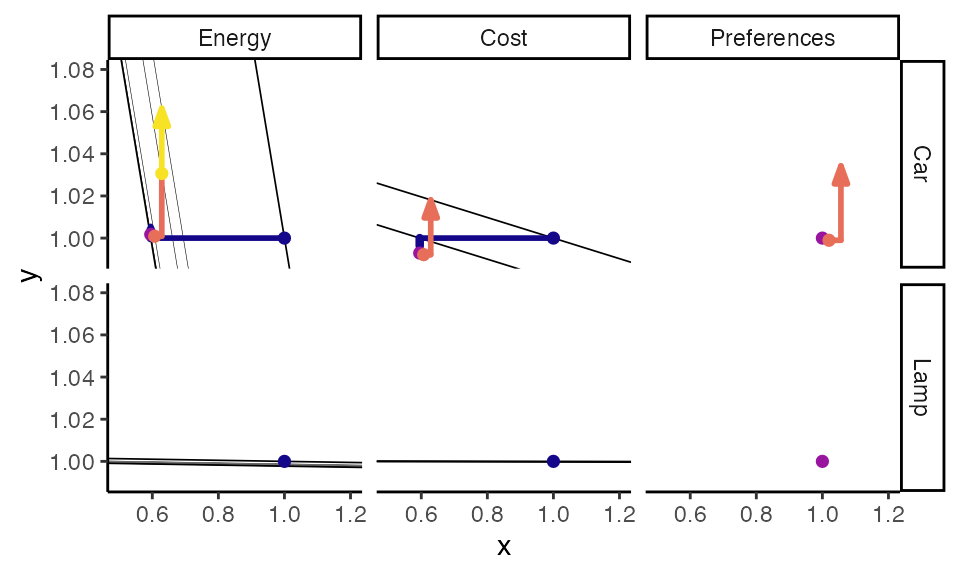
graph_params
While indexed controls how the data are quantified and graph_types and grid_types control what data are shown, graph_params controls the appearance of rebound graphs. graph_params should be a named list. The default graph_params list is path_graph_params.
ReboundTools::path_graph_params
#> $which_points
#> # A tibble: 5 x 2
#> point_name start_point
#> <chr> <lgl>
#> 1 orig TRUE
#> 2 star TRUE
#> 3 hat TRUE
#> 4 bar TRUE
#> 5 tilde FALSE
#>
#> $last_point
#> [1] FALSE
#>
#> $point_shape
#> [1] 19
#>
#> $point_size
#> [1] 1
#>
#> $point_stroke
#> [1] 1
#>
#> $which_arrows
#> # A tibble: 9 x 2
#> line_name end_arrow
#> <chr> <lgl>
#> 1 dempl FALSE
#> 2 emb FALSE
#> 3 cap FALSE
#> 4 md FALSE
#> 5 isub FALSE
#> 6 dsub FALSE
#> 7 dinc FALSE
#> 8 iinc FALSE
#> 9 prod FALSE
#>
#> $last_arrow
#> [1] TRUE
#>
#> $arrow_style
#> $angle
#> [1] 20
#>
#> $length
#> [1] 0.1inches
#>
#> $ends
#> [1] 2
#>
#> $type
#> [1] 2
#>
#> attr(,"class")
#> [1] "arrow"
#>
#> $dempl_colour
#> [1] "#150789FF"
#>
#> $emb_colour
#> [1] "#150789FF"
#>
#> $cap_colour
#> [1] "#150789FF"
#>
#> $md_colour
#> [1] "#150789FF"
#>
#> $empl_colour
#> [1] "#150789FF"
#>
#> $isub_colour
#> [1] "#99149FFF"
#>
#> $dsub_colour
#> [1] "#99149FFF"
#>
#> $sub_colour
#> [1] "#99149FFF"
#>
#> $dinc_colour
#> [1] "#E76F5AFF"
#>
#> $iinc_colour
#> [1] "#E76F5AFF"
#>
#> $inc_colour
#> [1] "#E76F5AFF"
#>
#> $prod_colour
#> [1] "#F7E225FF"
#>
#> $dir_colour
#> [1] "black"
#>
#> $indir_colour
#> [1] "black"
#>
#> $tot_colour
#> [1] "black"
#>
#> $dempl_size
#> [1] 1
#>
#> $emb_size
#> [1] 1.5
#>
#> $cap_size
#> [1] 1.5
#>
#> $md_size
#> [1] 1
#>
#> $empl_size
#> [1] 1
#>
#> $isub_size
#> [1] 1
#>
#> $dsub_size
#> [1] 1
#>
#> $sub_size
#> [1] 1
#>
#> $dinc_size
#> [1] 1
#>
#> $iinc_size
#> [1] 1
#>
#> $inc_size
#> [1] 1
#>
#> $prod_size
#> [1] 1
#>
#> $dir_size
#> [1] 1
#>
#> $indir_size
#> [1] 1
#>
#> $tot_size
#> [1] 2
#>
#> $dempl_linetype
#> [1] "solid"
#>
#> $emb_linetype
#> [1] "11"
#>
#> $cap_linetype
#> [1] "11"
#>
#> $md_linetype
#> [1] "solid"
#>
#> $empl_linetype
#> [1] "solid"
#>
#> $dsub_linetype
#> [1] "solid"
#>
#> $isub_linetype
#> [1] "solid"
#>
#> $sub_linetype
#> [1] "solid"
#>
#> $dinc_linetype
#> [1] "solid"
#>
#> $iinc_linetype
#> [1] "solid"
#>
#> $sinc_linetype
#> [1] "solid"
#>
#> $prod_linetype
#> [1] "solid"
#>
#> $dir_linetype
#> [1] "solid"
#>
#> $indir_linetype
#> [1] "solid"
#>
#> $tot_linetype
#> [1] "solid"
#>
#> $lineend
#> [1] "round"
#>
#> $linejoin
#> [1] "round"
#>
#> $reverse_path_drawing_order
#> [1] FALSE
#>
#> $points_atop_paths
#> [1] TRUE
#>
#> $energy_grid_colour
#> [1] "black"
#>
#> $zero_perc_rebound_grid_colour
#> [1] "black"
#>
#> $hundred_perc_rebound_grid_colour
#> [1] "black"
#>
#> $energy_rebound_lines_colour
#> [1] "black"
#>
#> $cost_grid_colour
#> [1] "black"
#>
#> $prefs_grid_colour
#> [1] "black"
#>
#> $prefs_ray_colour
#> [1] "black"
#>
#> $prefs_indiff_grid_colour
#> [1] "black"
#>
#> $energy_grid_size
#> [1] 0.1
#>
#> $zero_perc_rebound_grid_size
#> [1] 0.3
#>
#> $hundred_perc_rebound_grid_size
#> [1] 0.3
#>
#> $energy_rebound_lines_size
#> [1] 0.1
#>
#> $cost_grid_size
#> [1] 0.3
#>
#> $prefs_grid_size
#> [1] 0.1
#>
#> $prefs_ray_size
#> [1] 0.1
#>
#> $prefs_indiff_grid_size
#> [1] 0.5
#>
#> $energy_grid_linetype
#> [1] "solid"
#>
#> $zero_perc_rebound_grid_linetype
#> [1] "solid"
#>
#> $hundred_perc_rebound_grid_linetype
#> [1] "solid"
#>
#> $energy_rebound_lines_linetype
#> [1] "solid"
#>
#> $cost_grid_linetype
#> [1] "solid"
#>
#> $prefs_grid_linetype
#> [1] "solid"
#>
#> $prefs_ray_linetype
#> [1] "solid"
#>
#> $prefs_indiff_grid_linetype
#> [1] "solid"
#>
#> $n_indiff_curve_points
#> [1] 200
#>
#> $qs_qs0_lower
#> [1] 0.1
#>
#> $qs_qs0_upper
#> [1] 10Most parameters are self-explanatory. For example, ReboundTools::path_graph_params$dempl_colour sets the colour of the direct emplacement path.
my_graph_params <- path_graph_params
my_graph_params$dempl_colour <- "darkred"
load_eeu_data() %>%
rebound_analysis() %>%
path_graphs(indexed = TRUE,
graph_types = ReboundTools::graph_types$energy,
graph_params = my_graph_params) +
ggplot2::facet_wrap(facets = ReboundTools::eeu_base_params$case) +
ggplot2::theme_classic()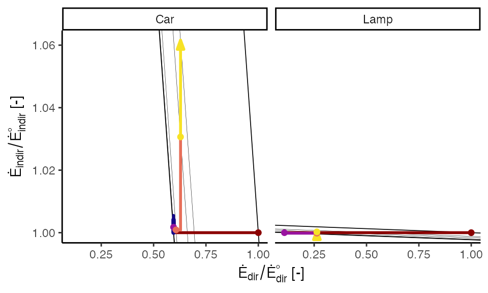
See help for path_graph_params for additional information.
The ReboundTools package assists with analyzing rebound effects and displaying the results. In particular,
rebound_analysis() function performs rebound analysis on energy efficiency upgrades,stages_table() function returns an xtable object suitable for inclusion in papers and reports, andpath_graphs() function returns ggplot2 objects that show rebound path graphs.Taken together, these functions provide important capabilities to analyze rebound effects for energy efficiency upgrades.